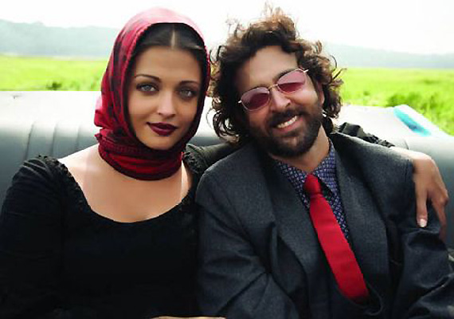

"Life is very short, but there is a lot of time for a request."
Guzaarish is a 2010 Indian Hindi-language romantic drama film that tells the story of Ethan Mascarenhas, a formerly world-famous magician who became a quadriplegic after a tragic performance accident. After fourteen years of being paralyzed and cared for by his devoted nurse, Sofia D'Souza, Ethan files a petition in court for the right to end his own life. The film explores themes of dignity, love, and the ethical debate surrounding euthanasia.